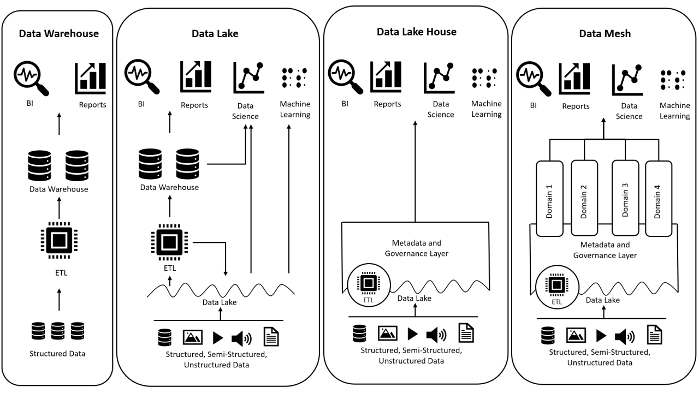

AI models come and go, but the way an institution organizes, governs,
and shares its data determines whether any of them are useful.
Shared standards
What is a Universal Data Model?
The problem
Every institution speaks a different data language
Your post-award system calls it AGENCY_NAME. Your ERP
calls it VENDOR_DESC. Your spreadsheet calls it "Sponsor."
Every system stores the same concept differently — and every integration
has to reconcile them from scratch.
The solution
A shared vocabulary across institutions
A UDM is a specification, not a database. It defines a common set
of tables and columns so that every institution's data can be
translated into one shared language. Ask the same question at any
institution, get a comparable answer.
Why it matters
Cross-institutional comparison and benchmarking become possible
AI tools learn one schema instead of one per institution
Applications built on the UDM work at every institution that adopts it
Get your data into UDM shape once, and the entire tool ecosystem opens up
How it works
A specification — it defines the shape, not where data lives
Institutions keep their own systems and translate into the shared schema
Map each source once to the UDM instead of building N-to-N integrations
New reports and dashboards come from the shared layer, not new plumbing
Shared standards
How source data maps to the UDM
Click a row to see how the value is transformed.
BUSINESS_ASSOCIATE_ID
→
Organization_ID
AGENCY_NAME
→
Organization_Name
AGENCY_TYPE
→
Organization_Type
DUNS
→
UEI
Cast:FLOAT → VARCHAR(50). The source stores IDs as floating-point numbers. The UDM expects a string.
Direct rename. No transformation needed. The value passes through unchanged.
CASE mapping: 'Federal' → Sponsor · 'University' → Subrecipient · 'UI Internal' → Department · 'Private Industry' → Vendor
Best effort: VERAS stores the deprecated DUNS number. The UDM expects a 12-character UEI. Most values are NULL until the source system migrates.
Source: VERAS (University of Idaho legacy post-award system) → Silver.VERAS.Organization
Infrastructure
Three approaches to institutional data
Structured, governed, fast queries
Pre-defined schemas enforce data quality
Great for reporting dashboards and compliance queries
Rigid schemas are expensive and slow to change
Cannot handle unstructured data (PDFs, images, JSON)
Best for: stable reporting needs with predictable schemas.
Flexible raw storage, any format, cheap
Store everything first, decide structure later
Great for archiving raw files and ML training data
No schema enforcement or query optimization
Without governance, becomes a "data swamp"
Risk: nobody knows what's in there or whether to trust it.
Flexible storage + structured governance layers on top
Open table formats (Iceberg) enable ACID transactions and schema evolution
Medallion architecture transforms raw data into governed views
Separation of storage and compute keeps costs down
Works for structured, semi-structured, and unstructured data
The architecture the GRANTED project chose for university research data.
Infrastructure
Four patterns for institutional data

The lakehouse combines the governance of a warehouse with the flexibility of a lake.
Why a lakehouse
Eight capabilities of a data lakehouse
Click a card to reveal the key question.
Trust & Governance
Can you prove who changed what, when, and why?
Data Quality
Are schemas enforced, anomalies detected, and freshness monitored?
Reliability
Is there automatic failover, backup, and point-in-time recovery?
Scalability
Can storage and compute scale independently as needs grow?
Openness
Are formats open and engines interchangeable with no vendor lock-in?
Multi-Modal
Can you handle structured, semi-structured, and unstructured data in one platform?
Simplicity
Can a small team operate this without a dedicated platform engineering group?
Cost Efficiency
Does it eliminate redundant copies and scale compute to actual workload?
Architecture
The GRANTED data lakehouse
Institutional Sources (VERAS, Banner, TDX)
↓
Shipyard Sync → MinIO (Bronze)
↓
Trino · Silver Views
↓
Trino · Gold Views (UDM)
↓
Trino · Platinum Views
↓
Marina API Gateway
↓
Your Application
Shipyard Admin UI and sync engine. Manages sources, adapters, and the catalog.
Marina API gateway. The only externally exposed service. JWT auth, rate limiting, query auditing.
MinIO S3-compatible object storage. Stores Iceberg tables and unstructured files.
Polaris Apache Iceberg REST catalog. Manages table metadata and namespaces.
Trino Distributed SQL engine. Queries Iceberg tables across all medallion layers.
Infrastructure
Open technology, interchangeable parts
Technology choices
Every layer is replaceable
Ingestion: Airbyte, Fivetran, custom scripts, or Shipyard
Storage: MinIO, AWS S3, PostgreSQL, or Snowflake
Query: Trino, DuckDB, Spark, or Dremio
Applications: Tableau, Power BI, LLM agents, or custom apps
Open table formats (Apache Iceberg) mean no vendor lock-in. Swap any component without rewriting the stack.
Implementation patterns
Two paths to a governed data layer
Medallion (recommended): Full Bronze → Silver → Gold → Platinum pipeline. Best for multi-source, multi-institution use cases.
Direct database: Connect existing databases and map tables directly to UDM views. Faster to start, but harder to govern at scale.
The UDM schema is machine-readable JSON. LLMs can consume it to auto-suggest adapter mappings.
Worked example
Following data through the layers
Tracing VERAS AGENCY_TYPE from source to application.
Bronze
AGENCY_TYPE = 'Federal' Raw, exactly as received from the VERAS API. No transformation.
Silver
Organization_Type = 'Sponsor' CASE WHEN maps 'Federal' to UDM enum 'Sponsor'. Column renamed to UDM standard.
Gold
Same value, now part of Gold.UDM.Organization. If Banner also provides this org, dedup picks the higher-priority source.
Platinum
Joined with Award data: "All active awards from Federal sponsors." Flat, access-controlled, ready for a dashboard or AI workflow.
Access
From organized data to governed access
Views
Creating a report is creating a view
A Platinum view is a SQL query saved in the catalog
Joins Gold tables, filters, aggregates, flattens
8 pre-built UDM views: Active Awards, Budget Comparison, Overdue Deliverables, and more
Need a new report? Write a view, assign access. Done.
Access control
Fine-grained, application-level RBAC
Each application gets a JWT identity with an allowed_tables list
Marina enforces table-level access on every request
No raw SQL accepted. Clients specify table name, filters, and limit.
Every query is audited: who asked, what table, when
Internal services (Trino, MinIO, Polaris, Shipyard) are never exposed. Marina is the only door.
Contrast
The data lakehouse vs the data swamp
Same query. Same task. Two very different outcomes.
Same query, different infrastructure
"What is PI Smith's current effort allocation?"
Dr. Smith: 40% NSF-2345678, 35% NIH R01-AI123456, 25% DOE-SC0012345
Source: Gold layer, snapshot 2026-04-01
Reconciled: 2026-03-15. Matches HR and Grants Office.
Same query tomorrow returns the same answer
Traceable, reproducible, auditable. Ready for AI context.
HR spreadsheet says 100% state-funded
Grants Office spreadsheet says 75% sponsored
Department chair's email says "about half and half"
No way to tell which version is current or authoritative
AI blends these into a confident-sounding wrong answer.
AI + Data
AI-assisted data ingestion
The hardest part of a lakehouse is mapping source data to the shared schema
Shipyard uses LLM assistance to accelerate adapter creation
Three step types: Convert (change a value), Shape (change structure), Map (assign to UDM column)
Silver layer only: no business logic, only data standardization
Source Columns AGENCY_TYPE, DUNS, ...
↓
AI Adapter Convert · Shape · Map
↓
UDM Columns Organization_Type, UEI, ...
AI + Data
Three levels of AI-assisted mapping
1
Suggest All
LLM reads the Bronze schema and UDM schema, then generates a complete function list mapping every source column to its UDM target. "Show me what the full mapping should be."
2
Fill Tree
Given specific inputs and a target UDM column, LLM populates the Convert and Shape steps. "I know what goes where. Help me figure out how to transform it."
3
Write SQL
For complex transforms that exceed the tree builder, LLM writes DuckDB-compatible SQL expressions directly. "This is too complex for the visual editor. Write me the SQL."
AI is a bonus, not integral. Every adapter works without AI configured.
Governance
Data governance as prerequisite
Provenance, permissions, and quality determine whether AI is safe to use
Ungoverned data + AI = confident-sounding wrong answers
Governance is not bureaucracy. It is the condition that makes automation safe
Better context is only useful if it is governed
Ungoverned context increases the error surface area, not just capability
Observability
Can you see what your data is doing?
Where did this data come from? (provenance)
When was it last updated? (freshness)
Who is allowed to access it? (permissions)
Has it changed since the last time we used it? (versioning)
Are producers and consumers bound by data contracts?
If you can't answer these, your AI can't either
Key distinction
AI consumes governed data and generates new governed data
Inputs
What the workflow reads
Policy PDFs
Tables and spreadsheets
Shared-drive forms
Dashboard sources
Operational guidance documents
Outputs
What the workflow may create
Extracted fields from PDFs
Tags and classifications
Structured summaries
Routing metadata
Draft operational records
Once those outputs feed a queue, dashboard, report, or decision, governance applies to them too.
Governance lens
Every new context source should trigger these questions
Click a card to reveal the question.
Provenance
Where did this information come from, and can we prove it?
Permissions
Who is allowed to access it, transform it, or expose it?
Quality
How current, complete, reliable, and explainable is it?
Sensitivity
Does it contain private, regulated, or institutionally sensitive material?
Stewardship
Who owns refresh, correction, and validation over time?
Human review
When should the system answer, cite and defer, or escalate?
Worked example
A proposal routing assistant with mixed sources
Scenario
A unit wants an AI assistant to answer questions about proposal
routing deadlines and internal approvals.
The team connects a current policy PDF, old shared-drive forms,
exception-heavy email guidance, and a few notes from
experienced staff.
Teaching point
More context is not automatically better context
Those sources do not carry the same authority, freshness, or
interpretive weight. The model may blend them into a plausible
answer that no one should trust without review.
Source map
Rate each source on the governance criteria
Click each criterion to cycle: neutral → green → yellow → red.
Current policy PDF
Likely authoritative
Shared-drive forms
Possibly stale
Email guidance
Exception-heavy
Staff notes
Local practice
Activity
Context readiness checklist
Think of one data source you'd connect to an AI workflow. Check each criterion it meets.